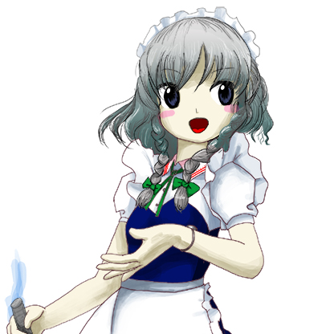

| キャラ紹介 | |
|---|---|
| ○空飛ぶ不思議な巫女 博麗 霊夢（はくれいれいむ） | |
|
毎度お馴染みの巫女さん。博麗神社の巫女さん。 突然勝手に暴れ始めたお祓い棒。 妖怪を見かけると自分から追い払いに行ってしまう。 しかし、巫女は便利だったので放って置いた。 そんなある日、霧の湖に棲む妖怪が暴れているという。 普段は大人しい筈の妖怪なのだが……。 それは紛れもなく異変の始まりでだった。 | |
| ○普通の魔法使い 霧雨 魔理沙（きりさめまりさ） | |
|
幻想郷に住む、普通な魔法使い。蒐集癖を持つ。 霧の湖で妖怪が暴れているらしい。 巫女に先を越されないように慌てて退治に出かける。 こんな時だが、最近「ミニ八卦炉」の調子がおかしい。 妖気に反応して勝手に火を噴くようになっていた。 通常より火力が増し、それが魅力的だったからだ。 | |
| ○紅い悪魔のメイド 十六夜 咲夜（いざよいさくや） | |
|  |
吸血鬼の棲む紅魔館のメイド長。
いつもは静かな霧の湖が騒々しい。 ほとりに建つ紅魔館からも見えていた。 どうせすぐに収まると思ったが、その目論見は外れる。 どうやら妖怪が暴れ始めたのも湖だけでは無いらしい。 彼女は最近手に入れた妖剣を手に調査に出かけた。 何処で手に入れたのか彼女にも判らなかったが……。 |